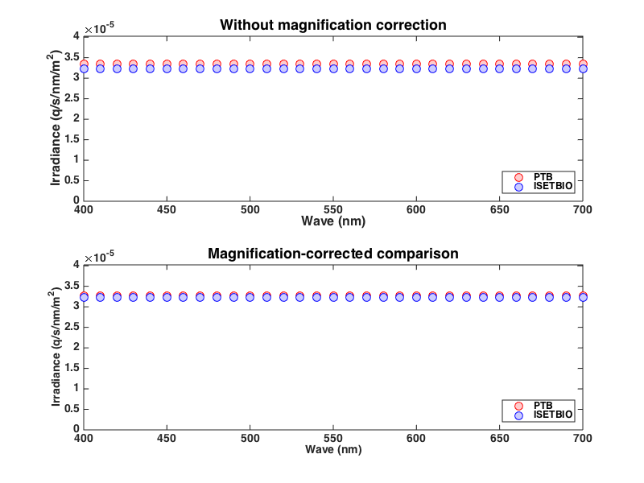

Contents
- Validation script for PTB_vs_ISETBIO_Irradiance test
- Initialize return params
- Initialize ISETBIO
- Set computation params
- Create a radiance image in ISETBIO
- Compute the irradiance in ISETBIO
- Get wavelength and spectral radiance spd data (averaged within the scene ROI)
- Get wavelength and spectral irradiance spd data (averaged within the scene ROI)
- Get the underlying parameters that are needed from the ISETBIO structures.
- Compute the irradiance in PTB
- Numerical check to decide whether we passed.
- Set validationReport, validationFailedFlag and validationData
- Generate plots, if so specified
function PTB_vs_ISETBIO_Irradiance(runParams) % % Validate ISETBIO-based irradiance computations by comparing to PTB-based irradiance computations. % % Call the validation script [validationReport, validationFailedFlag, validationDataToSave] = validationScript(runParams); % Update the parent @UnitTest object UnitTest.updateParentUnitTestObject(validationReport, validationFailedFlag, validationDataToSave, runParams); end
Validation script for PTB_vs_ISETBIO_Irradiance test
function [validationReport, validationFailedFlag, validationDataToSave] = validationScript(runParams)
Initialize return params
validationReport = 'None';
validationFailedFlag = true;
validationDataToSave = struct();
Initialize ISETBIO
s_initISET;
Set computation params
fov = 20; % need large field
roiSize = 5;
Create a radiance image in ISETBIO
scene = sceneCreate('uniform ee'); % Equal energy scene = sceneSet(scene,'name','Equal energy uniform field'); scene = sceneSet(scene,'fov', fov);
Compute the irradiance in ISETBIO
To make comparison to PTB work, we turn off off axis correction as well as optical blurring in the optics.
oi = oiCreate('human'); optics = oiGet(oi,'optics'); optics = opticsSet(optics,'off axis method','skip'); optics = opticsSet(optics,'otf method','skip otf'); oi = oiSet(oi,'optics',optics); oi = oiCompute(oi,scene); % Define a region of interest starting at the scene's center with size % roiSize x roiSize sz = sceneGet(scene,'size'); rect = [sz(2)/2,sz(1)/2,roiSize,roiSize]; sceneRoiLocs = ieRoi2Locs(rect);
Get wavelength and spectral radiance spd data (averaged within the scene ROI)
wave = sceneGet(scene,'wave'); radiancePhotons = sceneGet(scene,'roi mean photons', sceneRoiLocs); radianceEnergy = sceneGet(scene,'roi mean energy', sceneRoiLocs); % Need to recenter roi because the optical image is % padded to deal with optical blurring at its edge. sz = oiGet(oi,'size'); rect = [sz(2)/2,sz(1)/2,roiSize,roiSize]; oiRoiLocs = ieRoi2Locs(rect);
Get wavelength and spectral irradiance spd data (averaged within the scene ROI)
wave = oiGet(scene,'wave'); isetbioIrradianceEnergy = oiGet(oi, 'roi mean energy', oiRoiLocs);
Get the underlying parameters that are needed from the ISETBIO structures.
optics = oiGet(oi,'optics'); pupilDiameterMm = opticsGet(optics,'pupil diameter','mm'); focalLengthMm = opticsGet(optics,'focal length','mm');
Compute the irradiance in PTB
The PTB calculation is encapsulated in ptb.ConeIsomerizationsFromRadiance. This routine also returns cone isomerizations, which we are not validating here. The macular pigment and integration time parameters affect the isomerizations, but don't affect the irradiance returned by the PTB routine. The integration time doesn't affect the irradiance, but we need to pass it
macularPigmentOffset = 0;
integrationTimeSec = 0.05;
[isoPerCone, ~, ptbPhotoreceptors, ptbIrradiance] = ...
ptb.ConeIsomerizationsFromRadiance(radianceEnergy(:), wave(:),...
pupilDiameterMm, focalLengthMm, integrationTimeSec,macularPigmentOffset);
% Compare irradiances computed by ISETBIO vs. PTB
% accounting for the magnification difference.
% The magnification difference results from how Peter Catrysse implemented the radiance to irradiance
% calculation in isetbio versus the simple trig formula used in PTB. Correcting for this reduces the difference
% to about 1%.
m = opticsGet(optics,'magnification',sceneGet(scene,'distance'));
ptbMagCorrectIrradiance = ptbIrradiance(:)/(1+abs(m))^2;
Numerical check to decide whether we passed.
We are checking against a 1% error.
tolerance = 0.01;
ptbMagCorrectIrradiance = ptbMagCorrectIrradiance(:);
isetbioIrradianceEnergy = isetbioIrradianceEnergy(:);
difference = ptbMagCorrectIrradiance-isetbioIrradianceEnergy;
Set validationReport, validationFailedFlag and validationData
if (max(abs(difference./isetbioIrradianceEnergy)) > tolerance) validationReport = sprintf('Validation FAILED. Difference between PTB and isetbio irradiance exceeds tolerance of %0.5f %% !!!', 100*tolerance); validationFailedFlag = true; else validationReport = sprintf('Validation PASSED. PTB and isetbio agree about irradiance to %0.5f %%',100*tolerance); validationFailedFlag = false; end validationDataToSave.fov = fov; validationDataToSave.roiSize = roiSize; validationDataToSave.tolerance = tolerance; validationDataToSave.scene = scene; validationDataToSave.oi = oi; validationDataToSave.ptbMagCorrectIrradiance = ptbMagCorrectIrradiance; validationDataToSave.isetbioIrradianceEnergy = isetbioIrradianceEnergy;
Generate plots, if so specified
if (nargin >= 1) && (isfield(runParams, 'generatePlots')) && (runParams.generatePlots == true) h = figure(500); clf; set(h, 'Position', [100 100 800 600]); subplot(2,1,1); plot(wave, ptbIrradiance, 'ro', 'MarkerFaceColor', [1.0 0.8 0.8], 'MarkerSize', 10); hold on; plot(wave, isetbioIrradianceEnergy, 'bo', 'MarkerFaceColor', [0.8 0.8 1.0], 'MarkerSize', 10); hold off set(gca,'ylim',[0 1.2*max([max(ptbIrradiance(:)) max(isetbioIrradianceEnergy(:))])]); set(gca, 'FontName', 'Helvetica', 'FontSize', 14, 'FontWeight', 'bold'); legend({'PTB','ISETBIO'}, 'Location','SouthEast','FontSize',12); xlabel('Wave (nm)', 'FontName', 'Helvetica', 'FontSize', 16); ylabel('Irradiance (q/s/nm/m^2)', 'FontName', 'Helvetica', 'FontSize', 16) title('Without magnification correction', 'FontName', 'Helvetica', 'FontSize', 18, 'FontWeight', 'bold'); subplot(2,1,2); plot(wave,ptbMagCorrectIrradiance,'ro', 'MarkerFaceColor', [1.0 0.8 0.8], 'MarkerSize', 10); hold on; plot(wave,isetbioIrradianceEnergy,'bo', 'MarkerFaceColor', [0.8 0.8 1.0], 'MarkerSize', 10); hold off set(gca,'ylim',[0 1.2*max([max(ptbIrradiance(:)) max(isetbioIrradianceEnergy(:))])]); set(gca, 'FontName', 'Helvetica', 'FontSize', 14, 'FontWeight', 'bold'); xlabel('Wave (nm)', 'FontName', 'Helvetica', 'FontSize', 14); ylabel('Irradiance (q/s/nm/m^2)', 'FontName', 'Helvetica', 'FontSize', 14) legend({'PTB','ISETBIO'}, 'Location','SouthEast','FontSize',12) title('Magnification-corrected comparison', 'FontName', 'Helvetica', 'FontSize', 18, 'FontWeight', 'bold'); end
end
[ 1.] Results for 'PTB_vs_ISETBIO_Irradiance' probe: ----------------------------------------- validation status : PASSED ----------------------------------------- validation report : Validation PASSED. PTB and isetbio agree about irradiance to 1.00000 % ----------------------------------------------------------------------------------------------------------------------------- validation data saved : 'fov', 'roiSize', 'tolerance', 'scene', 'oi', 'ptbMagCorrectIrradiance', 'isetbioIrradianceEnergy' ----------------------------------------------------------------------------------------------------------------------------- date last run : 09-Oct-2014 17:05:46 matlabVersion : 8.4.0.150421 (R2014b) computer architecture : MACI64 computer IP address : manta.psych.upenn.edu username : nicolas git branch...tracking : dev...origin/dev of ISETBIO -----------------------------------------------------------------------------------------------------------------------------